地域の魅力を発掘・発信して、住んでみたい “まち” づくり
 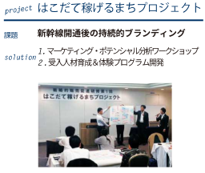
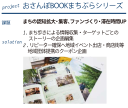
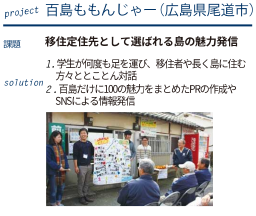
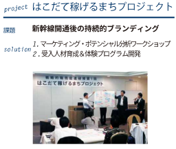
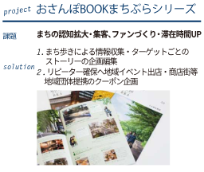
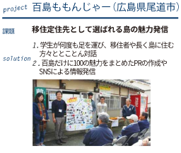
日本各地と世界を駆け巡り、日本文化体験予約プラットフォームで稼げる地域へ
 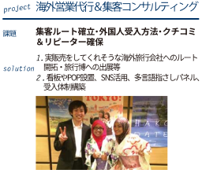
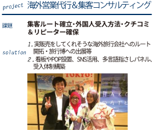


日本の未来を担うまちづくり人材の“育成と採用マッチング”

 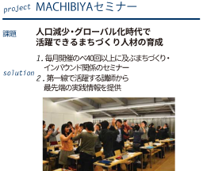
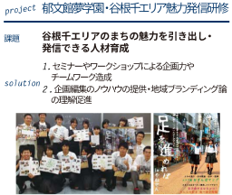
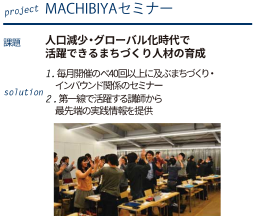
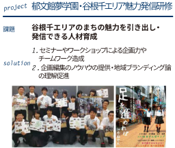
\ VOICE /
石塚孝裕----------
日本大学卒
地域ブランディング事業
不動産業界、営業職 就職
\ VOICE /
長谷川眞子----------
神田外語大学卒
地域ブランディング事業
IT業界、SE職 就職
\ VOICE /
咄下諒平----------
早稲田大学卒
インバウンド事業
自動車業界、事務職 就職
どんなことをしていたか
地ブラでは本当に色々な事をやりました。主にはまちブラ制作の為、取材依頼、電話での取材調整、そして取材を主に行っていました。もちろん取材に進む前の街のリサーチ等もしました。そして今まで行ったことのない、知らない街にたくさん行きました（これが一番良いことでした
就職して活かせたこと
地ブラでのインターンでは営業にも事務方にもどちらにも活かせる経験を積めます。電話での取材調整では、社会で一番最初に躓きやすい電話対応の経験が積めます！（小さい事ですが意外と大事だと思います)。もちろん取材依頼や取材そのものは対人スキルが上がると思ってます（インターン生全員非常に優れてました）。二点は社会で汎用性の高いスキルだと思います。ただ地ブラでは本当に頑張っていい物や人に伝わるものを作っている人がいます。その人達の問題を発見し、その解決方法を出す過程を見られる事が、地ブラでのインターンで得られる一番大きなことです。あの人だったらもっと頑張っているや、こうして取り組んでいるかもと、どこに行っても参考になる人達に出会えます！
どんなことをしていたか
地域ブランディング事業部で約1年間インターンをやらせて頂きました。まちぶらの制作における、まちのリサーチを始め、企業や市役所、店舗に出向いての取材のアポ取り、取材、原稿作成などを行いました。できあがった冊子は実際に配って回り、まちのみなさんとの色々な交流を楽しむことができました。また、セミナーにも参加して地方創生について勉強させて頂きました。
就職して活かせたこと
インターンを通して地域活性化の考えや方法などを学ぶことができ、考え方の視野が広くなりました。またスキルの面では、取材で培った質問力や接待力が、職場でお客様の要望をヒアリングする際に活きています。さらに、原稿作成の際は読み手により伝わりやすい言葉を突き詰めていた為、その経験が会社の資料作成時に役立っています。
どんなことをしていたか
インバウンド事業での市場調査やクライアント先営業の帯同
就職して活かせたこと
まだ研修中なので実務的なものに活かせたかどうかの判断は難しいですが、すべてのプロジェクトや企画、契約なども小さい仕事の積み重ねで成り立っていることを学びました。大学在学中特に就活前は、きらきらした職業に目が移りがちですが、それらも全て地味な仕事の積み重ねで出来ていることを理解したことは自分にとっては大きな財産でした。現在も座学や工場の研修中で、同じ作業の繰り返しですが、意味のある作業だと感じながら働けています。またインターン中は、頼まれた作業をどのような目的の為にやるのか、なぜやるのかを考え、時には社員の方に直接聞いて取り組んでいました。What for、Whyを理解することで集めてくる情報や使用するグラフなども変わってきます。そういったことを実践できる最適な場所だと思います。